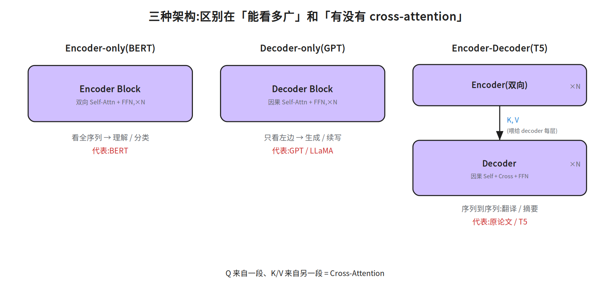
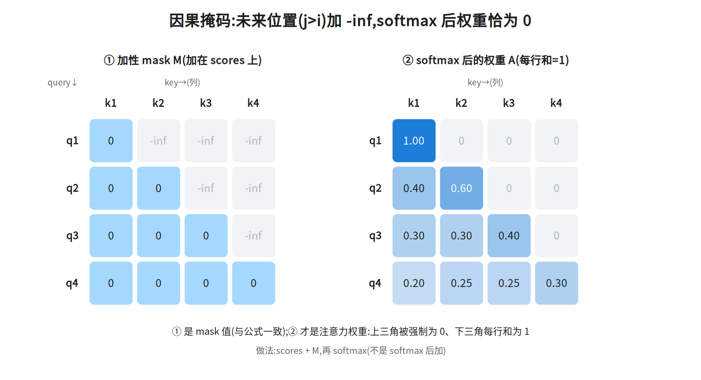
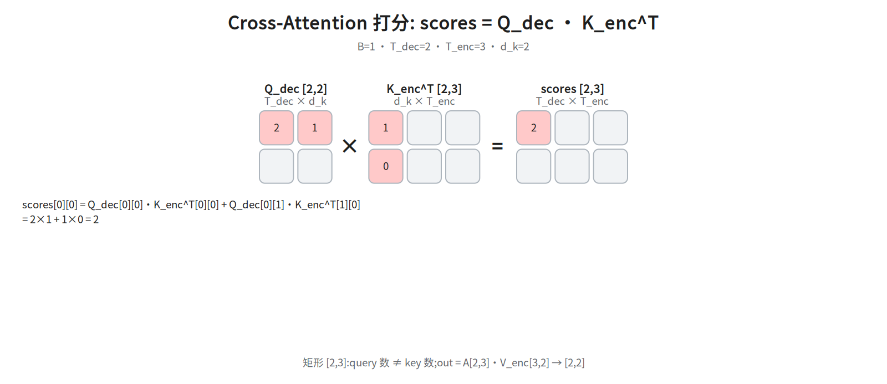

第四层 · 组装 —— Encoder / Decoder / 掩码 / Cross-Attention¶
本层回答:把 Block 拼成完整模型,有哪几种拼法?为什么生成任务需要掩码和 Cross-Attention?
0. 依赖图(学习顺序)¶
根节点是可以无条件接受的事实;箭头表示「前者支撑后者」。能力依赖的拓扑序是从根到汇点 J(D、F 先于 B,B 再经 G/H/I 汇到 J);但成文顺序不是拓扑序:§1 先给中间节点 B 的结论表,§2/§3 再回填 D、F 的定义,所以读 §1 时先当标签收下是正常的。 例外只有一处:C(「生成时不能看到未来」)是带前提的根,严格读作「逐 token 自回归解码时不能看到未来」。§2 用 Mask-Predict、扩散式解码说明「没有因果掩码也能生成」,那是把 C 的前提收窄,不是推翻它——按这个读法,图与 §2 不冲突,不必回头怀疑这张图。 图 ≠ 成文顺序:图只声明能力依赖(D、F 支撑 B)。§1 先给结论表格时,“因果掩码”“cross-attention”“自回归”先当标签接受,读完 §2/§3 再回看表格,不必在 §1 卡住。 §1 还会提前用到几个标签,一并先当标签收下:teacher forcing(§2 末给定义)、encoder/decoder 与 Block 的堆叠关系(§5 给代码)、decoder 的三个子层(§3:因果 self-attention → cross-attention → FFN)、KV Cache / CLM / few-shot(上下文学习)(§1 中段「三个裸术语」段各给一句定义),它们只影响细节回看,不影响 §1 的结论。图上未单列的三块都挂在 B 之下、属下游而非前置:位置编码差异(§4)、padding mask(§3 与「常见坑」,与因果掩码并列的第二种 mask)、MLM/NSP(§6;它们就写在 G 节点「BERT:MLM + NSP」的标签里,图上没有独立节点或边,属下游预训练目标而非前置)。
graph TD
A["任务形态<br/>理解 / 生成 / 序列到序列"] --> B["三种架构"]
C["生成时不能看到未来"] --> D["因果掩码<br/>严格上三角(不含对角线)= -∞"]
E["解码每一步都要参考整段源序列<br/>不需要词级对齐"] --> F["Cross-Attention<br/>Q 来自 decoder,K/V 来自 encoder"]
D --> B
F --> B
B --> G["Encoder-only<br/>BERT:MLM + NSP"]
B --> H["Decoder-only<br/>GPT:next-token"]
B --> I["Encoder-Decoder<br/>T5 / 原论文:seq2seq"]
H --> J["自回归生成"]
I --> J1. 三种架构(先记结论)¶
| 架构 | 由谁组成 | 每层里的 attention | 代表 | 适合 |
|---|---|---|---|---|
| Encoder-only | 只堆 encoder | 双向 self-attention | BERT | 理解类:分类、抽取、判别 |
| Decoder-only | 只堆 decoder(去掉 cross) | 带因果掩码的 self-attention | GPT / LLaMA | 生成类:续写、对话 |
| Encoder-Decoder | encoder + decoder | encoder 双向;decoder 因果 + cross-attention | 原论文 / T5 / 机器翻译 | 序列到序列:翻译、摘要 |
一句话:区别就在 Block 内部(骨架都是第二三层的那个 Block,换掉的是 Block 里的 attention 子层:mask 决定可见范围、有没有 cross-attention 子层),即"注意力能不能看全序列"和"有没有 cross-attention"。
为什么现代通用大模型几乎都收敛到 decoder-only?(面试追问):
- 目标统一:翻译、摘要、问答、代码都能写成“给前缀,生成后缀”,不用为任务换架构。
-
训练/推理一致(注意:这条对「选哪种架构」没有区分力,不是 decoder-only 独有的优势):训练与推理的目标其实一致——encoder-decoder 的解码端同样是 next-token prediction(训练时配 teacher forcing——每步喂真实前缀、不用模型自己的预测,§2 末给定义)、推理时同样自回归,不存在“目标错位”。真正的差别是结构(一套还是两套 Block、两堆之间要不要 cross-attention 这个连接件)与调度复杂度。
-
工程更简单:只有因果 self-attention,一套 mask + KV Cache;encoder-decoder 多一套 cross-attention 与调度。
这一条里的 KV Cache、下一条的 CLM / few-shot 都还没定义,先当标签读;定义就在本节末「三个裸术语」段,不影响本段结论。 - 上下文学习:海量 CLM 预训练自然学出“看提示、照格式续写”,few-shot 很顺。
encoder-only(BERT 类)仍适合分类/抽取等理解任务;encoder-decoder 仍适合翻译/摘要等严格 seq2seq。详见 notes/07_pretraining.md §1.5。
三个裸术语先各给一句定义(细节在后面几层):KV Cache = 自回归生成时把已算过的 K、V 缓存复用,每步只算新 token,不重算整段;CLM = Causal Language Modeling,因果语言建模,即“给前缀预测下一个 token”这个预训练目标(GPT 系);few-shot / 上下文学习 = 不改参数,只在提示里给几个示例,模型照格式续写。第 3、4 条理由(工程更简单、上下文学习)的落点是:K/V 同源 → 缓存只有一套;预训练目标与推理用法同形 → 提示里的例子就等于“前缀”。

2. 因果掩码(Masked / Causal Attention)—— 生成的关键¶
问题: 生成任务里,预测第 t 个词时,模型不能偷看第 t+1 及之后的词(那是答案/未来)。但标准 attention 是"每个位置都能看全序列",会泄露未来信息。
解法: 在 softmax 之前,把"未来位置"的分数置成 -∞,e^{-∞}=0——未来位置的权重就变成 0,不参与加权。
mask[i, j] = 0 if j ≤ i (允许看:自己及之前)
mask[i, j] = -∞ if j > i (禁止看:未来)
scores = Q·Kᵀ / √d_k + mask
A = softmax(scores) # 被 mask 的位置权重精确为 0
掩码后的注意力矩阵(严格上三角(不含对角线)为 0,下三角含对角线才有值):
k1 k2 k3 k4 · 有值,空白 = 0
q1 [ · ]
q2 [ · · ]
q3 [ · · · ]
q4 [ · · · · ]

本框数值可逐格按框内算式自核(
notes/02_attention.md §5.5 ⑤.5用的是另一组 scores、且明写略去 ÷√d_k,不能用来核本框);掩码形状示意见diagrams/14h_mask.landscape.png(数值口径见本框末注)。 不翻外部文件也能验的一组数(取T=3, d_k=2,Q=K=[[1,0],[0,1],[1,1]]):scores_raw = Q·Kᵀ = [[1,0,1],[0,1,1],[1,1,2]] scores = /√2 ≈ [[0.71,0,0.71],[0,0.71,0.71],[0.71,0.71,1.41]] mask = [[0,-∞,-∞],[0,0,-∞],[0,0,0]] scores+mask = [[0.71,-∞,-∞],[0,0.71,-∞],[0.71,0.71,1.41]] A = softmax(逐行) = [[1,0,0],[0.33,0.67,0],[0.25,0.25,0.50]]
第 1 行只有
k1有权重(A[0][1]=A[0][2]=0),被 mask 的位置精确为 0;每行仍归一化为 1。图14h_mask只用来看掩码形状(哪些格子被置-∞、哪些留空),不要拿它核验本框的数值:那张图用的是另一套示例数,且未除 √d_k,与本框的 scores/A 不是同一组;本框的数一律以本框算式为准(逐格按本框算式自核即可;notes/02_attention.md §5.5 ⑤.5的 scores 与掩码口径都和本框不同,不能当核对依据)。
def causal_mask(T, device):
m = torch.full((T, T), float("-inf"), device=device) # mask 必须和 scores 同 device
m = torch.triu(m, diagonal=1) # 上三角(不含对角线)= -inf
return m
# Q/K 就是上面公式里的 Q、K;用 Q.device,不要引用本篇从未定义的 x
scores = Q @ K.transpose(-2, -1) / (d_k ** 0.5) + causal_mask(T, Q.device)
A = scores.softmax(dim=-1)
为什么用 -∞ 而不是 0? 必须让 softmax 之后的权重精确等于 0。如果加 0,softmax 仍会给未来位置分配非零概率(e^score > 0),就泄露了。-∞ 保证被 mask 的权重恰好为 0。
为什么叫"因果"? 因为它保证每个位置只依赖它之前的信息,和"时间上不能穿越"一致。常被顺口叫作“自回归注意力”,但严格说两者不等价:因果掩码是机制(禁止看未来),自回归是使用方式(逐个生成)。
下面马上要用到四个词,先各给一句最小定义免得边读边猜(本节只给一遍,后面不再重复):NAR(非自回归) = 不逐 token、一次并行吐整段;Mask-Predict = 先全填
[MASK]再迭代重填低置信位置;扩散式解码 = 从噪声多步去噪出整段;block-wise = 序列切块、一次生成一块(块内多 token 由并行的独立 proposal 猜、再因果验证),注意力仍是普通因果掩码、不额外加块内掩码。(四个词的定义到此结束;以下转入论证——证明「因果掩码不是生成的必要条件」、以及两类反例方向相反。别把论证当定义读。)BERT 用非因果注意力、训练时一次前向就并行算出所有位置的输出;反过来要小心所举反例的方向:非自回归(NAR)模型(Mask-Predict、扩散式解码等)是「没有因果掩码也能生成」的例子,它证明的是「因果掩码不是生成的必要条件」,并不能证伪「因果掩码 → 自回归」;至于 block-wise 解码(Stern et al., 2018),它恰恰是「有因果掩码也不等于严格逐 token」的例子:注意力全程保留因果掩码;块内 k 个候选由 k 个独立 proposal 模型各自只看同一段已确定的因果前缀并行猜出(块内不靠掩码隔离),验证阶段用普通因果注意力并行打分(Figure 1 的 verify 明写要 condition on the previous independent predictions,即块内靠前的 token 对靠后位置是可见的),再取最长可接受前缀;所以它只能说明「生成粒度是块、不是单个 token」。 换句话说,这两类反例方向相反,别混为一类:Mask-Predict、扩散式解码属于「根本没有因果掩码」,用来证明因果掩码不是生成的必要条件;block-wise 则是「保留因果掩码、但一次吐多个 token」,它证明的正是「有因果掩码也不等于严格逐 token」,方向和前者正好相反。(此处只是举例,不影响主线,不必先去补语音识别或扩散模型的知识。)
(四个词的定义见上文,不重复。出处:block-wise 并行解码见 Stern et al., 2018 Blockwise Parallel Decoding;Mask-Predict 见 Ghazvininejad et al., EMNLP 2019;扩散式解码属另一支,此处不展开。)
训练时的巧妙之处:因为有掩码,一次前向就能并行算出所有位置的预测(位置 i 的预测只用 ≤i 的信息),不用像推理那样一步步来。这是 Transformer 训练高效的来源。
这跟 teacher forcing 是两件事,别混:并行前向是因果掩码带来的效果(位置 i 只看得到 ≤i 的输入);teacher forcing 指的是喂法——训练时解码器每一步的输入都用真实的前缀(而非模型自己上一步的预测)。正因为喂的是真实前缀、不依赖上一步的输出,整段才能并行喂进去;推理时才换成用自己生成的 token(第六层的自回归)。
3. Cross-Attention:连接两段序列¶
翻译任务:输入是英文(source),输出是中文(target)。解码器生成中文第 t 个词时,需要参考整个英文句子。
Cross-Attention 的巧妙:Q 来自解码器,K/V 来自编码器。
Q = 解码器当前状态 · W_Q [B, T_dec, d_k] (我在找什么)
K = 编码器输出 · W_K [B, T_enc, d_k] (源序列每个词的标签)
V = 编码器输出 · W_V [B, T_enc, d_v] (源序列每个词的内容)
scores = Q·Kᵀ [B, T_dec, T_enc] ← 注意形状:query 数 ≠ key 数
out = softmax(...) · V [B, T_dec, d_v]
对比 self-attention:Q,K,V 同源、T×T 方阵;cross-attention:Q 一段、K/V 另一段,矩阵是 T_dec × T_enc 的矩形。这是唯一用"两段序列"的地方。
- mask 用不用? cross-attention 通常不用因果掩码(目标端可以看全整个源句);但要 mask 掉 padding。padding 是为把 batch 里长短不一的句子凑成同长矩阵、在源句尾部补的占位符(如
<pad>,id=0),不是真词。做法:softmax 之前把 padding 对应的 key 列(位置上是 K 的第 j 行,落到 scores 上是第 j 列)只在 scores 上置-∞;K 只读、V 完全不动——权重不在 V 里,而在 softmax 之后的 A 的 padding 那一列(精确为 0);V 的每一行只是源序列某个词的向量本身、不带权重,所以A[:,pad]=0乘出来自然是 0。若反过来去动 V 那行(置-∞),0×(-∞) 直接 NaN——不是加 0(加 0 仍有概率);而且只屏蔽列,别整行填-∞(整行-∞时 softmax 分母Σe^{-∞}=0,直接 NaN)。下面数值例子取T_enc=3,若第 3 个是 padding,就只把 scores 的第 3 列置-∞,两行仍各自归一化(注意:下面给出的 A 是未加 padding mask 的;加了之后约为[[0.67,0.33,0],[0.20,0.80,0]])。 - 解码器每层有三个子层:
因果 self-attention→cross-attention→FFN。
FFN(前馈网络,Feed-Forward Network):两层线性 + 激活,维度 d → 4d → d,参数约 8d²;加上注意力四个投影的 4d²,合计就是前置清单里的 12d²。(这只是顺手把账记上:FFN 是解码器三个子层里的第三个,和下面 cross-attention 的矩形演算无关——记完这句就回到矩形。)
FFN 三问(可跳过,不影响下面的矩形演算):①激活 = 逐元素套在中间那层上的非线性函数(原论文 ReLU,即
max(0, x);现代变体 GELU / SwiGLU),只给非线性、不改形状;②为什么必须非线性——两层线性叠起来等价于一层线性(W₂(W₁x) = (W₂W₁)x),不加激活 FFN 就退化成一个线性投影;③为什么中间是 4d——原论文的工程选择(给每个位置一条更宽的非线性通道,参数正好4d²+4d² = 8d²),不是理论必然,现代模型常改比例(如 LLaMA 的 SwiGLU 取约8/3·d并加第三个投影)。本层只需记住「FFN = 逐位置的两层 MLP + 非线性」,变体留第五层。
数值/形状演算(矩形从哪里来):
取 T_dec=2, T_enc=3, d_k=2:
Q_dec = [[2,1],[0,2]] # [2,2] = T_dec × d_k
K_enc = [[1,0],[0,1],[1,1]] # [3,2] = T_enc × d_k
scores_raw = Q_dec · K_enc^T = [[2,1,3],[0,2,2]] # [2,3] = T_dec × T_enc
scores = scores_raw / √d_k = scores_raw / √2 ≈ [[1.41,0.71,2.12],[0,1.41,1.41]]
只算左上角:scores_raw[0][0] = 2×1 + 1×0 = 2,再除以 √d_k = √2 得 scores[0][0] ≈ 1.41(cross-attention 和 §2 一样要缩放,d_k=2 也不例外)。shape 的来历是
[T_dec,d_k]·[d_k,T_enc] → [T_dec,T_enc]——query 数和 key 数不必相等,所以 scores
不是方阵;之后 out = A[T_dec,T_enc]·V_enc[T_enc,d_v] → [T_dec,d_v]。
对缩放后的 scores 逐行 softmax 可直接验算:A ≈ [[0.284,0.140,0.576],[0.108,0.446,0.446]](每行和为 1)。取 V_enc = [[1,0],[0,1],[1,1]](d_v=2)再乘,得 out = A·V_enc ≈ [[0.86,0.72],[0.55,0.89]],即 [T_dec, d_v] = [2,2] 的输出。
图
14m_cross_scores用的是与本段同一组Q_dec、K_enc,但图上标的是未除 √d_k 的scores_raw:左上角是2(不是1.41),图上只有Q_dec第 0 行、K_enc^T第 0 列和scores_raw[0][0]=2这一格,既没有 A、也没有 softmax 任何一步——不要照图去找 A。图能核对的是矩形形状[T_dec,T_enc]=[2,3]和这一格scores_raw[0][0]=2;缩放后的 scores/A/out 请照本段算式算,别照图。

4. 位置编码在编码器/解码器里的差异¶
- Encoder-only(BERT):可学习位置编码,双向看,适合理解。
- Decoder-only(GPT):因果掩码 + 位置编码。GPT-1/2/3 用的是可学习绝对位置编码;RoPE 出自 RoFormer(Su et al., 2021),LLaMA(2023)只是采用者;PaLM、GPT-NeoX 早在 2022 年就已采用,目前是主流做法(第五层展开)。
- Encoder-Decoder:两端都加位置编码;解码器靠因果掩码保证自回归。
三者一句话分清:正弦 PE 是固定公式,与词向量逐元素相加;可学习 PE 是另一张
[max_len, d_model]的可训练矩阵(按位置查表后相加,参数另算,不在前面记的 12d² 里);RoPE 不“加”在词向量上,而是按位置对 Q/K 做旋转,让内积只依赖相对位置差 m−n(带符号:位置 (5,2) 与 (2,5) 分数不同,不是只依赖 |m−n|)(第五层展开)。BERT 与 GPT 用的都是可学习 PE(上面第二种);它与正弦 PE 同属「加在词向量上」的加法式,LLaMA 一系用 RoPE 则不加在词向量上、改对 Q/K 做旋转。
5. 实际案例:同一个 Block,三种用法¶
同一个第三层的 Block,通过"改 attention 的可见范围 + 加不加 cross"变成三种用途:
先把「右移」和 BOS 说清楚——不然后面那行 tgt = 右移的真实前缀 照字面写不出来:
- 目标序列记作
y = [y1, y2, …, yT];最前面补一个起始符[BOS](可学习,或固定 id),再砍掉最后一个词,得到喂给解码器的输入:tgt = [BOS, y1, y2, …, y_{T-1}]。这就是「右移一位」(shift right)。 - 对齐关系:位置 t 的输入是目标词 t−1,位置 t 的监督目标才是目标词 t。所以第 1 个位置的输入只能是
[BOS](它没有前一个词);最后一个目标词yT只出现在监督里,不作为输入出现。 - 因果掩码在训练时保证位置 t 只看得到
tgt[0..t-1] = [BOS, y1, …, y_{t-1}],正好不含yt,所以整段并行算也不泄露。 -
一句话:
dec = embed([BOS] + y[:-1]) + PE,loss = CE(logits, y);推理时没有真实y,才改成把上一步生成的词接到输入末尾(§2 末的自回归)。 -
补两个定义:
logits= 解码器最后一层输出的未归一化分数向量,形状[T, V](V = 词表大小);CE(cross-entropy,交叉熵)= 先对 logits 做 softmax 得概率,再取目标词那一项概率的负对数、沿位置取平均,即loss = -mean_t log softmax(logits[t])[y_t]。这样才和上面「位置 t 的监督目标才是目标词 t」对上:第 t 行的 logits 只与y_t算损失。
# Pre-LN:每个子层先 LN 再进模块、再残差相加(下面写成 LN(x))
Encoder Block: x += MHA_双向(LN(x)) ; x += FFN(LN(x))
Decoder Block: x += MHA_因果(LN(x)) ; x += CrossAttn(Q=LN(x), K=enc_out, V=enc_out) ; x += FFN(LN(x))
# 模型级组装(补上 §0 承诺的堆叠关系):enc_out 是 encoder 那堆 Block 的输出
enc_out = encoder(embed(src) + PE) # [B, T_enc, d_model],堆 N 层 Encoder Block
dec = embed(tgt) + PE # 训练时 tgt = 右移的真实前缀
for blk in decoder_blocks: dec = blk(dec, enc_out) # 每个 Decoder Block 都读同一份 enc_out
# 注意:K、V 都取自 enc_out,但各自乘自己的 W_K / W_V —— 两份不同张量,不相等
BERT 怎么做分类? 在输入最前面加一个特殊的 [CLS] token,它经过双向 attention 汇聚了整句信息,取它的输出接一个分类头(一个线性层,把 d 维句向量映射到类别数)即可。这就是"理解类"任务的范式。
GPT 怎么做生成? 因果注意力 + 训练时用"下一个 token 预测"目标;推理时逐个生成(第六层讲 KV Cache)。
6. 补:BERT 是怎么预训练的(高频,别再只答"结构")¶
结构之外的必问点——BERT 的预训练目标:
- MLM(Masked Language Modeling,掩码语言模型): 随机选中输入中约 15% 的 token 作为待预测位置(这 15% 里真正换成
[MASK]的只有 80%,约 12%),让模型双向地根据上下文预测这些位置的词(像完形填空)。这正是 BERT 能双向看的原因——因为要预测的是中间被挖空的位置,看两边都不算"偷看答案"。这也是它区别于 GPT(因果、只能看左边)的根本。
一个易错细节:那 15% 里,80% 换成
[MASK]、10% 换成随机词、10% 保持不变——因为下游任务(真正要应用的任务,如分类、抽取)没有[MASK],要防止模型只学会"盯着[MASK]做预测"。
- NSP(Next Sentence Prediction): 判断两句话是否相邻。现已基本被弃用,但证据要分清:RoBERTa 的消融(ablation:去掉某个组件看指标怎么变)是去掉 NSP 后下游持平或略好(即贡献有限/无贡献),并没有说它“有害”;“换成更难的句子顺序目标(SOP)更强”是 ALBERT 的结论。两句常被并成一句,引用时要分开。后续模型多只用 MLM,或改用 SOP。
面试口径: 问"BERT 怎么预训练"→ 答 MLM(双向完形填空)+ NSP(且 NSP 已弃用)。问"BERT 和 GPT 为什么一个能双向一个只能单向"→ 答预训练目标不同:MLM 挖空预测中间词(可双向),GPT 是下一个词预测(必须因果)。
面试要点¶
- BERT 和 GPT 的结构区别? → 都是 Transformer 系;BERT encoder-only 双向,GPT decoder-only 因果。一个是"填空/理解",一个是"续写/生成"。
1b. BERT 怎么预训练的? → MLM(随机选中 15% 位置待预测、其中 80% 换
[MASK],双向预测)+ NSP;NSP 现已弃用(RoBERTa)。双向能力正来自 MLM 挖空预测(看两边不算偷看)。 - 为什么生成任务需要掩码? → 否则会看到未来 token,训练时信息泄露,学不到真正的自回归生成。
- 掩码为什么用 -∞? → 让 softmax 后的权重精确为 0,彻底屏蔽未来。
- cross-attention 和 self-attention 区别? → Q 与 K/V 是否同源;矩阵是方阵还是
T_dec×T_enc。 - 训练时为什么能并行? → 因果掩码让每个位置的预测只依赖前缀,一次前向即可并行算所有位置。
[CLS]是干嘛的? → BERT 里一个汇聚整句信息的特殊 token,用于下游分类。
常见坑¶
- 掩码加在 softmax 之前(加在分数上),不是之后。
- padding mask 和 causal mask 是两回事:前者屏蔽填充位,后者屏蔽未来;可以叠加。
- 别把 padding mask 写成整行
-∞:一行全是-∞时 softmax 分母为 0,结果 NaN;只屏蔽 padding 所在的 key 列。 - cross-attention 里 Q 的序列长度是解码器的,别写反。
- Decoder-only 模型没有 cross-attention(它只有自回归 self-attention + FFN)。
相关图¶
09_architectures(三种架构)· 08_causal_mask(因果掩码矩阵)· 14h_mask(掩码形状示意;示例数与 §2 不同、未除 √d_k,只核形状不核数值)
· 14m_cross_scores(Cross-Attention 矩形 scores;Q/K 与 §3 同、scores 未除 √d_k,只核形状与 scores_raw)(均在 diagrams/,只有横版 .landscape.png,没有竖版;竖版未随本篇同步,需要时到源码仓取)
下一步¶
第五层 · 现代变体:Pre-LN/RMSNorm、RoPE、GQA/MQA、SwiGLU、MoE —— 从原论文到 LLaMA/GPT 的工程演进。